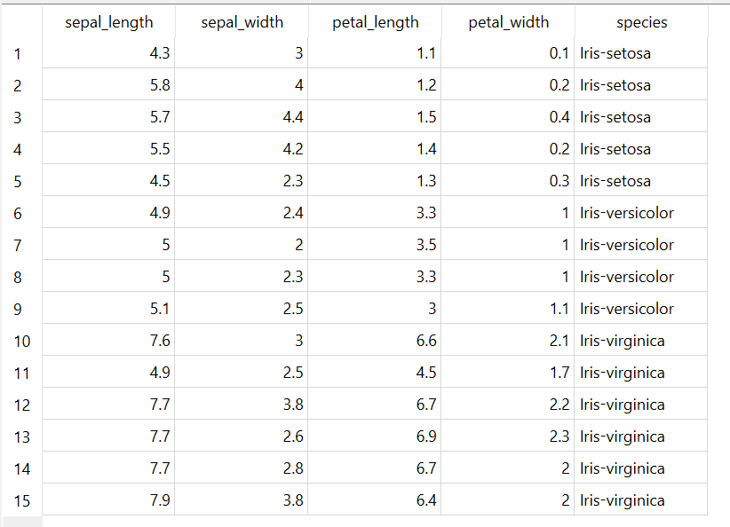
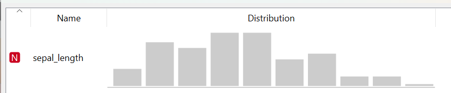
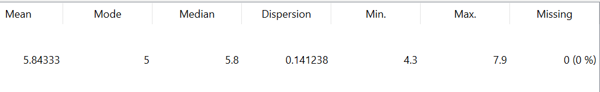
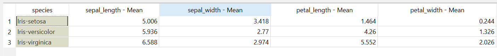
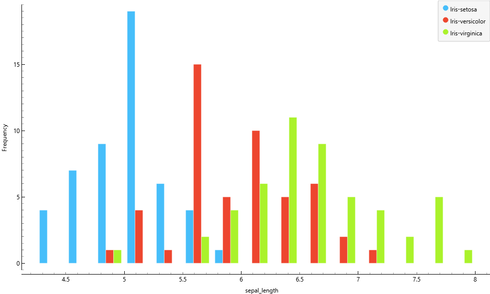
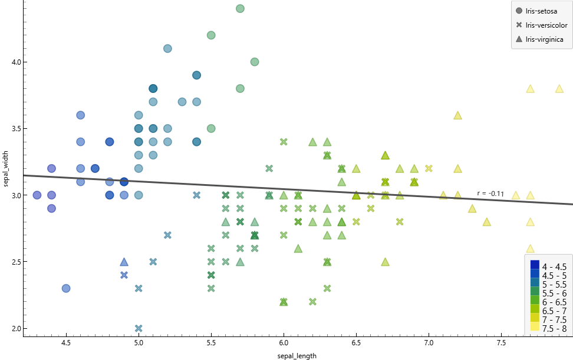

Data Understanding#
Eksplorasi Data Iris#
Dataset Iris Flower merupakan dataset multivariate yang diperkenalkan oleh ahli statistika dan biologi inggris, Ronald Fisher, pada tahun 1936. Dataset bunga Iris ini sangat terkenal di dunia Machine Learning yang digunakan untuk klasifikasi. Dataset Iris Flower ini didapatkan dari kaggle, berikut link kaggle dari data: https://www.kaggle.com/datasets/arshid/iris-flower-dataset
Dataset Iris Flower ini merupakan data terstruktur karena dinyatakan dalam bentuk tabel dengan atribut (kolom) dan baris.
Dataset ini terdiri dari:
150 data
5 atribut
4 atribut numerik:
sepal_length
sepal_width
petal_length
petal_width
1 atribut kategorical:
spesies
Pada atribut species ini memiliki 3 kategori, Jumlah setiap spesies sebanyak 50 setiap kategorinya :
iris-setosa
iris-versicolor
iris-virginica.
Cara kolekting data, menarik data dari database untuk di orange/knime
Berikut merupakan lima data pertama untuk melihat struktur dan format data iris flower secara umum
import pandas as pd
df = pd.read_csv("IRIS.csv")
df.head()
| sepal_length | sepal_width | petal_length | petal_width | species | |
|---|---|---|---|---|---|
| 0 | 5.1 | 3.5 | 1.4 | 0.2 | Iris-setosa |
| 1 | 4.9 | 3.0 | 1.4 | 0.2 | Iris-setosa |
| 2 | 4.7 | 3.2 | 1.3 | 0.2 | Iris-setosa |
| 3 | 4.6 | 3.1 | 1.5 | 0.2 | Iris-setosa |
| 4 | 5.0 | 3.6 | 1.4 | 0.2 | Iris-setosa |
Dimensi Dataset
Dataset ini memiliki 150 baris dan 5 kolom
df.shape
(150, 5)
Struktur dan Tipe Data
Dataset Iris Flower ini memiliki 5 atribut, di antaranya 4 atribut bertipe data numerik dan 1 atribut bertipe object/kategorical
df.info()
<class 'pandas.DataFrame'>
RangeIndex: 150 entries, 0 to 149
Data columns (total 5 columns):
# Column Non-Null Count Dtype
--- ------ -------------- -----
0 sepal_length 150 non-null float64
1 sepal_width 150 non-null float64
2 petal_length 150 non-null float64
3 petal_width 150 non-null float64
4 species 150 non-null str
dtypes: float64(4), str(1)
memory usage: 6.0 KB
Pengecekan Missing Value
Pada dataset ini tidak ditemukan data kosong, sehingga dataset iris flower ini dalam kondisi bersih dan bisa dilakukan pengecekan analisis lebih lanjut.
df.isnull().sum()
sepal_length 0
sepal_width 0
petal_length 0
petal_width 0
species 0
dtype: int64
Berdasarkan pengecekan missing value, tidak ditemukan data kosong pada dataset. Tetapi berdasarkan analisis menggunakan aplikasi orange, terdapat 15 data yang terindikasi sebagai outliers. Outlier merupakan data aneh dari dataset yang ada.
Deteksi Outliers
Pada Dataset Iris terdapat 15 data yang terindikasi outliers. Yaitu data aneh yang ada pada dataset Iris Flower

Gambaran Statistik Awal
Untuk mengetahui karakteristik numerik dari masing-masing atribut, maka dilakukan perhitungan statistik deskriptif menggunakan fungsi describe()
df.describe()
| sepal_length | sepal_width | petal_length | petal_width | |
|---|---|---|---|---|
| count | 150.000000 | 150.000000 | 150.000000 | 150.000000 |
| mean | 5.843333 | 3.054000 | 3.758667 | 1.198667 |
| std | 0.828066 | 0.433594 | 1.764420 | 0.763161 |
| min | 4.300000 | 2.000000 | 1.000000 | 0.100000 |
| 25% | 5.100000 | 2.800000 | 1.600000 | 0.300000 |
| 50% | 5.800000 | 3.000000 | 4.350000 | 1.300000 |
| 75% | 6.400000 | 3.300000 | 5.100000 | 1.800000 |
| max | 7.900000 | 4.400000 | 6.900000 | 2.500000 |
Describe Data Iris#
Ukuran Kecenderungan Terpusat
Pada bagian statistik deskriptif ini dilakukan perhitungan nilai untuk mengetahui ukuran pemusatan data pada masing - masing atribut dalam dataset, yaitu:
Mean (Rata- Rata)
Median (Nilai Tengah)
Modus/Mode (Nilai Sering Muncul)
Mengukur Sebaran Data (Range, Quartil, Rentang Inquartile)
Variansi dan Standar Deviasi
Skewness
Implementasi Code untuk perhitungan nilai
from scipy import stats
df=pd.read_csv("IRIS.csv", usecols=[0])
print("jumlah data ",df['sepal_length'].count())
print("rata-rata ",df['sepal_length'].mean())
print("nila minimal ",df['sepal_length'].min())
print("Q1 ",df['sepal_length'].quantile(0.25))
print("Q2 ",df['sepal_length'].quantile(0.5))
print("Q3 ",df['sepal_length'].quantile(0.75))
print("Nilai Max ",df['sepal_length'].max())
print("kemencengan","{0:.2f}".format(round(df['sepal_length'].skew(),2)))
mode=stats.mode(df)
print("Nilai modus {} dengan jumlah {}".format(mode.mode[0], mode.count[0]))
print("kemencengan " ,"{0:.6f}".format(round(df['sepal_length'].skew(),6)))
print("Standar Deviasi ","{0:.2f}".format(round(df['sepal_length'].std(),2)))
print("Variansi ","{0:.2f}".format(round(df['sepal_length'].var(),2)))
jumlah data 150
rata-rata 5.843333333333334
nila minimal 4.3
Q1 5.1
Q2 5.8
Q3 6.4
Nilai Max 7.9
kemencengan 0.31
Nilai modus 5.0 dengan jumlah 10
kemencengan 0.314911
Standar Deviasi 0.83
Variansi 0.69
Implementasi code di atas digunakan untuk menghitung ukuran statistik deskriptif pada atribut sepal_length yang meliputi, jumlah data, mean (rata - rata), nilai minimal, Q1, Q2 (median), Q3, nilai max, kemencengan (skewness), Modus, standar deviasi, dan variansi.
Penjelasan
Jenis Statistika |
Nilai |
Keterangan |
|---|---|---|
Jumlah Data (n) |
150 |
Total seluruh data yang dianalisis |
Rata-rata (Mean) |
5.84 |
Nilai rata-rata sebagai pusat data |
Median (Q2) |
5.80 |
Nilai tengah setelah data diurutkan |
Modus (Mode) |
5.0 |
Nilai yang paling sering muncul |
Nilai Minimum |
4.30 |
Nilai terkecil dalam dataset |
Nilai Maksimum |
7.90 |
Nilai terbesar dalam dataset |
Kuartil 1 (Q1) |
5.10 |
25% data berada di bawah nilai ini |
Kuartil 3 (Q3) |
6.40 |
75% data berada di bawah nilai ini |
Standar Deviasi |
0.83 |
Mengukur tingkat penyebaran data |
Variansi |
0.69 |
Kuadrat dari standar deviasi |
Dataset Iris Flower juga dapat divisualisasikan menggunakan tools feature statistics pada aplikasi orange, sehingga dapat diketahui berapa nilai mean, median, modus, dan lain sebagainya.


Statistik Deskriptif Setiap Fitur Terhadap Class
rata - rata setiap atribut di masing masing class/spesies

Visualisasi Data Iris#
Histogram Data Iris#
Histogram adalah grafik yang digunakan untuk menampilkan distribusi frekuensi data numerik dengan cara membagi data ke dalam beberapa interval (disebut bin atau kelas).

Scatter Plot Data Iris#
Scatter Plot (Diagram Sebar) adalah grafik yang digunakan untuk melihat hubungan antara dua data angka. Grafik ini menampilkan titik-titik yang mewakili pasangan nilai dari dua variabel. Dari pola titik tersebut, kita bisa melihat apakah kedua variabel memiliki hubungan (misalnya naik bersama, turun, atau tidak berhubungan). Pada data IRIS, scatter plot bisa digunakan untuk melihat hubungan antara panjang sepal dan panjang petal.
